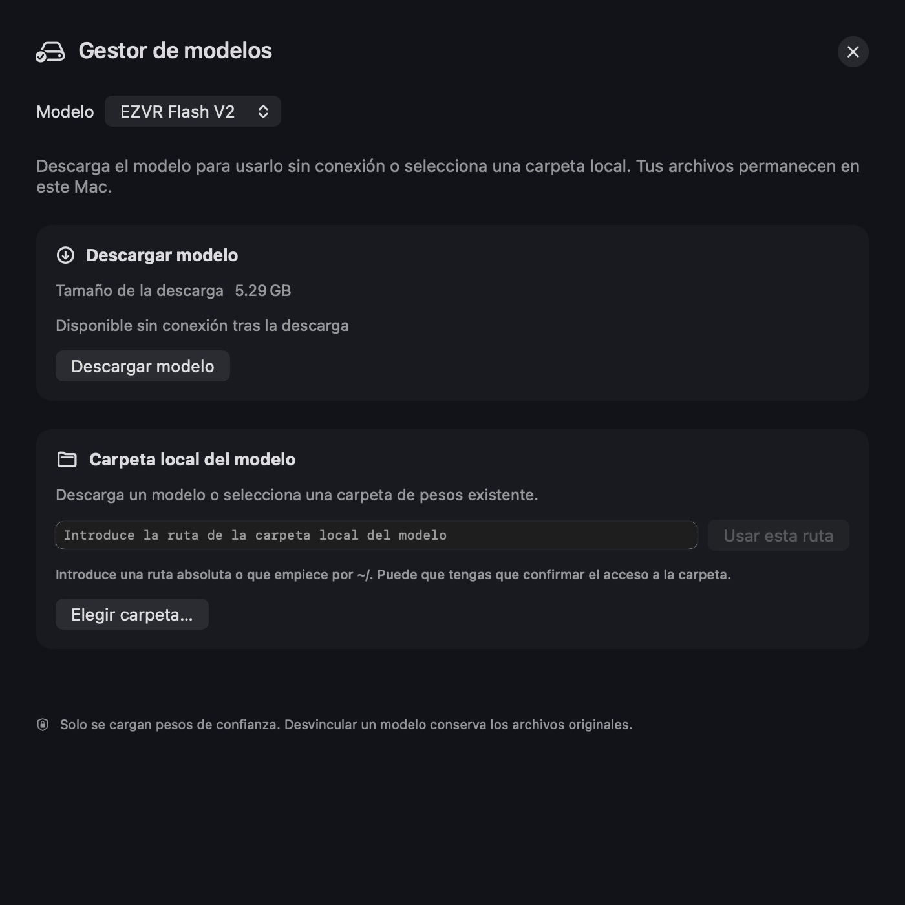

Dale más claridad
a tus recuerdos.
Mejora tus vídeos y fotos con IA sin sacarlos de tu Mac. Prueba una vista previa, elige qué fragmento restaurar y guarda el proyecto para continuar más tarde.
Primero debes descargar o seleccionar un modelo; después podrás restaurar sin conexión. Requiere un Mac con chip de Apple, 8 GB de memoria como mínimo y macOS 14 o posterior. Descarga del modelo: aprox. 7,79 GB.
Cómo restaurar cinco segundos de un experimento
Sigue los pasos en la interfaz en español para importar el vídeo, seleccionar los primeros cinco segundos y reproducir el resultado. Se ha acortado la espera. Al final se muestran a la vez el original de 640 × 480 píxeles y la restauración de 1280 × 960.
No se ha podido reproducir el vídeo en esta página. Abrir el archivo MP4
El Servicio Geológico de Estados Unidos (USGS) filmó este experimento en un canal el 22 de septiembre de 1999 para documentar el paso del agua sobre un lecho de sedimentos erosionado. Consultar el archivo original del USGS (en inglés)
Ver la demostración en chino, inglés, español y francés (MP4)
Descubre la aplicación en uso
Abre una captura para verla a tamaño completo. La ventana principal y el selector de duración proceden de la demostración en español del experimento en el canal.




Créditos del material de muestra
Vídeo: Adrien JACTA / Pexels · Licencia de Pexels
Foto: Nathan Anderson / Unsplash · Licencia de Unsplash